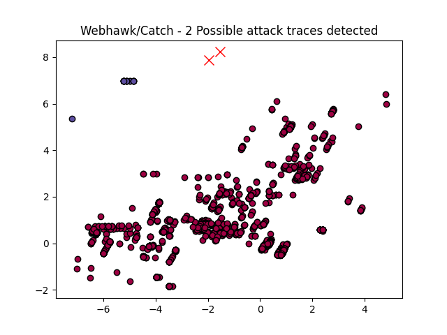

Webhawk Catch ReportUnsupervised learning Web logs/OS processes attack detection. Date: 20/06/25 at 21:54:08 GMTLog file: /Users/walid/Downloads/access.log.2020-07-01 Log type: apache logs Findings: 2 |
 |
| Severity | Related CVE(s) | Line# | LLM Insights(llama3.2) | Log line |
| High | No CVE found | 449 | The log line indicates a potential SQL injection vulnerability, as the request is made to a PHP file with user-inputted data (/include/dialog/select_soft_post.php). A known related attack is the "OWASP Top Ten - Injection" which can be exploited by an attacker to manipulate the database. | 125.113.203.26 - - [01/Jul/2020:14:13:50 -0700] "POST /include/dialog/select_soft_post.php HTTP/1.1" 404 291 "http://192.168.125.128/1.html" "Mozilla/5.0 (Windows NT 10.0# Win64# x64) AppleWebKit/537.36 (KHTML# like Gecko) Chrome/70.0.3538.110 Safari/537.36" |
| High | No CVE found | 6158 | The log line indicates a potential vulnerability in the Apache web server, as it is logging an attempt to include a malicious file ("demotag.lib.php") which could be used for remote code execution (RCE). This is similar to the known "Apache File Inclusion Vulnerability" (CVE-2011-2533), where an attacker can exploit the vulnerability to execute arbitrary PHP code. | 47.108.116.247 - - [02/Jul/2020:01:25:18 -0700] "HEAD /include/taglib/demotag.lib.php HTTP/1.1" 404 309 "-" "-" |